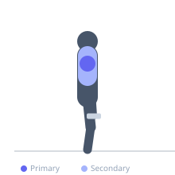

Exercise guide / Dumbbell Front-to-Lateral Raise Complex
Dumbbell Front-to-Lateral Raise Complex
The dumbbell front-to-lateral raise complex combines a front raise and a lateral raise into one continuous repetition, training the anterior and lateral deltoid within a single set without putting the dumbbells down. The combined movement increases total time under tension for the deltoids per set and trains the transition between the two deltoid heads' force production, making it a time-efficient way to address both anterior and lateral deltoid development. The front raise phase begins each rep; the lateral raise completes it.
Primary muscles
deltoid anterior
deltoid lateral
Secondary muscles
trapezius upper
Equipment
Standard Barbell


Starting position
- Stand with dumbbells at the sides. Arms straight, slight elbow bend.
Setup
- Use lighter than standard front raise weight since both heads are trained in one rep. The cumulative fatigue is high.
Steps
- Step 1: Begin with dumbbells at the sides.
- Step 2: Raise both dumbbells forward (front raise) to shoulder height, palms down.
- Step 3: At the top of the front raise, without pausing, sweep both arms outward to the sides (lateral raise position) — arms now horizontal, perpendicular to the torso.
- Step 4: Lower both arms from the lateral position back to the sides.
- Step 5: That is one repetition. Repeat from the front raise.
Coaching cues
- Front raise first — then sweep to the sides
- No pause at the transition
- Own the lower — 2 seconds down from the lateral
Breathing
- Exhale through the front raise and lateral transition. Inhale lowering.
Range of motion
- Sides to shoulder height (front), then sweep to shoulder height (lateral), then lower.
Tempo
- 2-0-2-2
Common mistakes
- Pausing between the front and lateral portion — the complex should flow continuously
- Raising too high — shoulder height is the target for both raises
Safety
- Very light dumbbells — the continuous nature of the complex creates sustained deltoid demand
- Avoid swinging or using momentum
Training
- hypertrophy: 10–15 reps
- hypertrophy: 3–4 sets
- Rest: {'hypertrophy': 90}